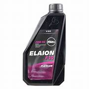

busca
LUBRICANTES.com
Que es la lubricacion del motor
La lubricación del motor es un proceso esencial para el correcto funcionamiento y la prolongación de la vida útil de un motor. Un sistema de lubricación es un medio por el cual se coloca un material, generalmente un aceite o una grasa, entre dos superficies para aliviar la fricción y, por lo tanto, también aliviar el desgaste.

¿Cómo funciona el sistema de lubricación del motor?
En un sistema de lubricación típico, el aceite lubricante se almacena en el cárter
del motor y es bombeado a través de conductos hacia las zonas que requieren lubricación1.
El aceite lubricante forma una película protectora entre las partes móviles, evitando el
contacto
di20px; entre ellas y reduciendo la fricción1.

Tipos de Lubricantes
Los lubricantes automotrices se pueden clasificar de varias maneras, pero las
dos clasificaciones más comunes son según su Elaboración y según su Viscosidad.
Según su elaboración:
Lubricantes semis-intéticos ----> Estos lubricantes están formados
a partir de una mezcla de bases minerales con sintéticas. Son
los más utilizados en los vehículos debido a su precio accesible
y características. Además, requieren cambios en plazos más prolongados.
Lubricantes sintéticos ---->La base de estos lubricantes es un destilado
de petróleo, aunque este se transforma para mejorar su calidad. Estos aceites son menos volátiles y pueden resistir mejor las temperaturas extremas.
Según su viscosidad
Multigrado: Estos lubricantes disponen de un gran rango de viscosidad,
que varía según la temperatura a la que se exponen. Son los productos
más sofisticados.
Monogrado: Son ideales para aquellas zonas con temperaturas estables.
Su viscosidad se mantiene en condiciones limitadas de temperatura.
Es importante mencionar que cada tipo de lubricante está formulado para
realizar funciones específicas y proporcionar protección óptima para
diferentes componentes de un vehículo. Por lo tanto, es esencial elegir
el lubricante correcto para tu vehículo y realizar cambios regulares de
lubricante para garantizar el correcto funcionamiento y la longevidad
de tu vehículo.
¿Por qué es importante la lubricación del motor?
La lubricación adecuada del motor es vital para su correcto funcionamiento2. Si el motor no está debidamente lubricado, las partes móviles se desgastarán más rápidamente, lo que puede ocasionar una pérdida de potencia, un aumento en el consumo de combustible y, en casos extremos, la rotura del motor2. Además de reducir la fricción, el sistema de lubricación también ayuda a disipar el calor generado por el motor2. El aceite lubricante absorbe el calor de las partes móviles y lo lleva hacia el cárter, donde se enfría antes de volver a ser bombeado al motor2. Para garantizar un funcionamiento óptimo del sistema de lubricación, es fundamental realizar un mantenimiento adecuado. Esto incluye cambiar regularmente el aceite y el filtro de aceite, ya que con el tiempo el aceite se contamina y pierde sus propiedades lubricantes2.
